Captures natives du simulateur iPhone, sans retouche.
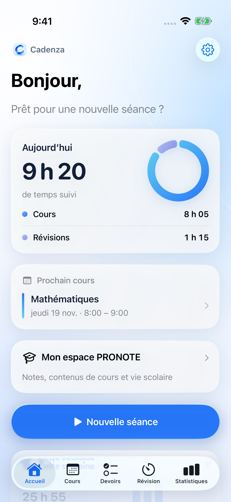
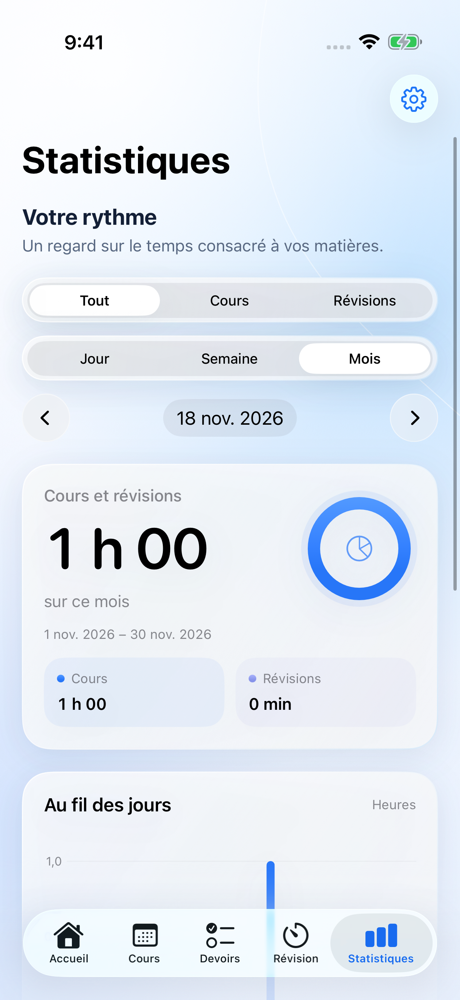
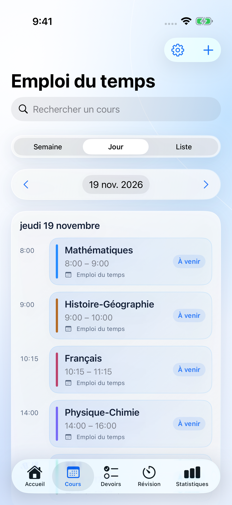
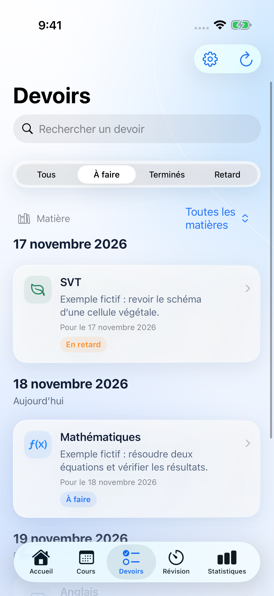
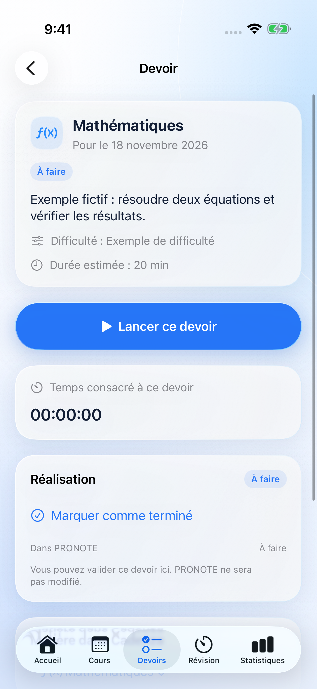
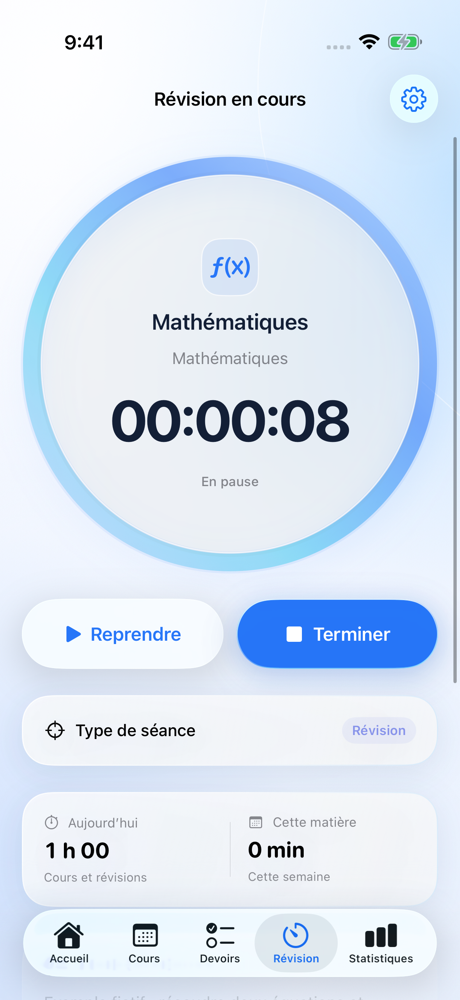
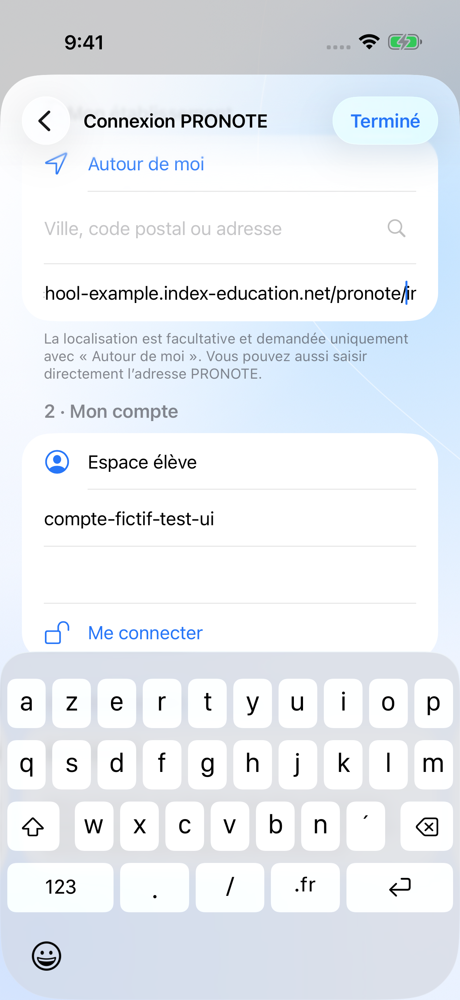
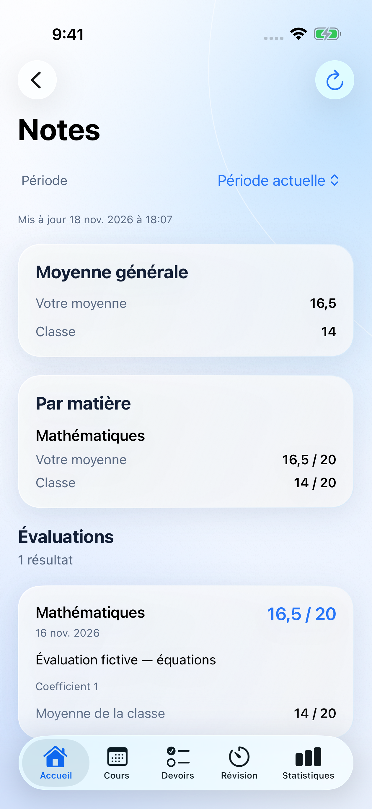
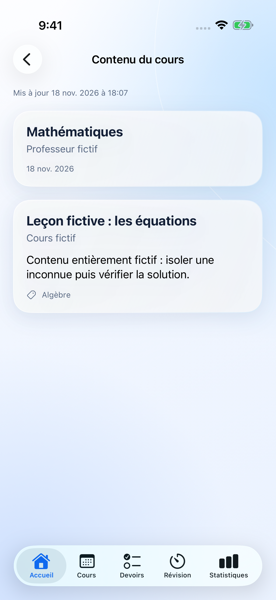
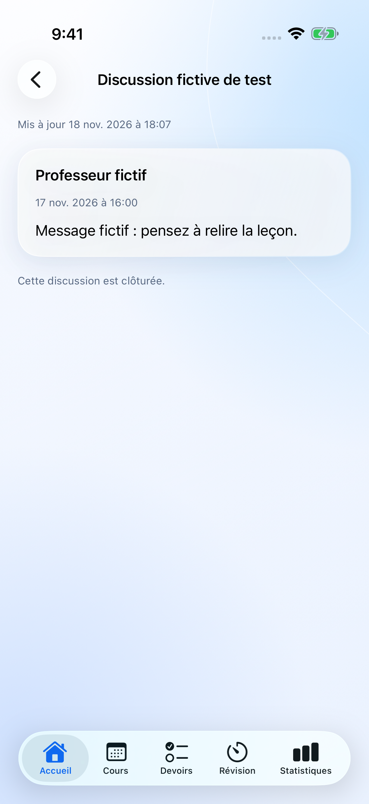
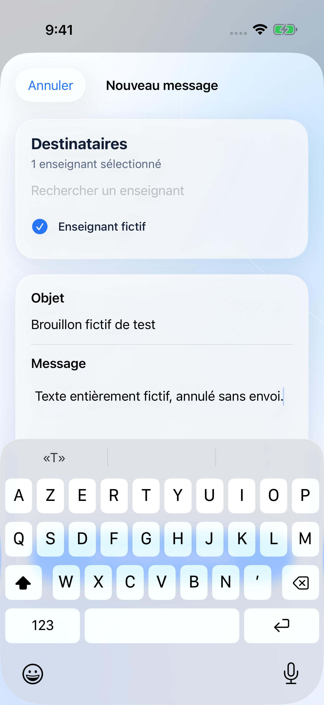
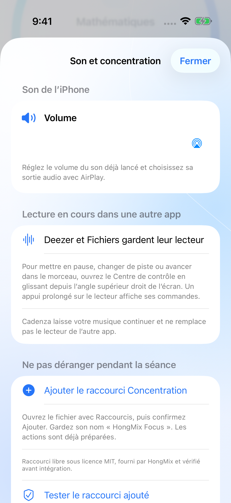
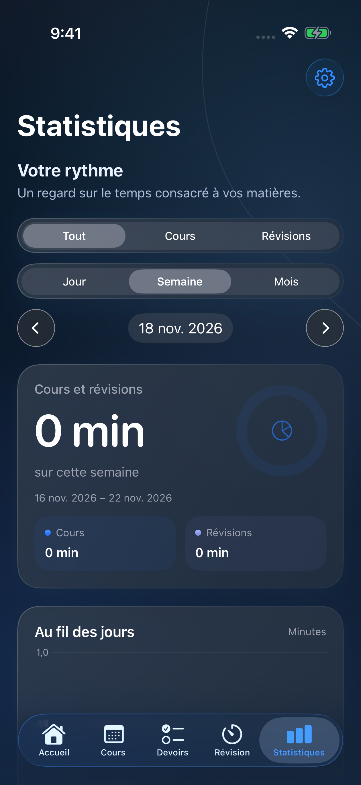
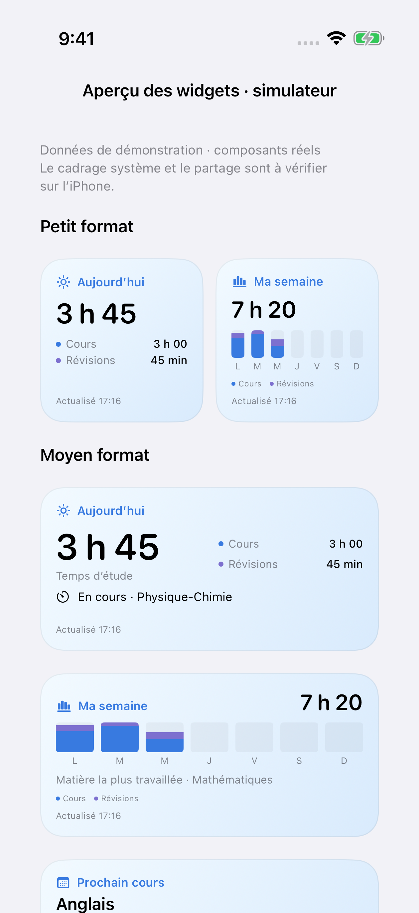
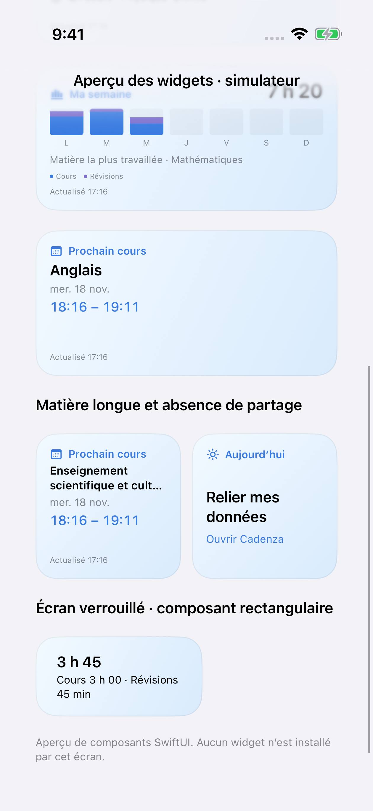
Les essais sur la démo publique PRONOTE sont consignés séparément. L’import du raccourci, les autorisations, la lecture réelle des widgets après Sideloadly et la température sur iPhone restent des essais matériels distincts.